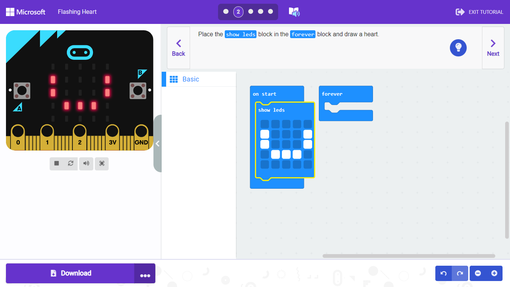

Applictions
Scratch
Scratch เป็นชุมชนการเขียนโค้ดสำหรับเด็กที่ใหญ่ที่สุดในโลก และเป็นภาษาเขียนโค้ดที่มีอินเทอร์เฟซแบบภาพที่เรียบง่าย ซึ่งช่วยให้เยาวชนสามารถสร้างเรื่องราว เกม และแอนิเมชั่นดิจิทัลได้ Scratch ออกแบบ พัฒนา และดูแลโดย มูลนิธิ Scratch ซึ่งเป็นองค์กรไม่แสวงหาผลกำไร Scratch ส่งเสริมทักษะการคิดเชิงคำนวณและการแก้ปัญหา การสอนอย่างสร้างสรรค์และการเรียนรู้ การแสดงออกและความร่วมมือ และความเสมอภาคในการใช้งาน Scratch สามารถใช้งานได้ฟรีเและมีให้บริการในกว่า 70 ภาษา
Scratch ทำอะไรได้บ้าง
Scratch สามารถสร้างชิ้นงานอย่างง่าย เช่น เกม อนิเมชัน ดนตรี เมื่อสร้างชิ้นงานเสร็จแล้ว สามารถอัพโหลดขึ้นเว็บไซต์เพื่อแสดงผลงาน เพื่อแบ่งปันกับผู้อื่นได้ด้วย
เด็กๆ จะได้เรียนรู้เกี่ยวกับหลักการทางคณิตศาสตร์ และแนวคิดในการโค้ดดิ้ง ไปพร้อมกับการคิดอย่างสร้างสรรค์ มีเหตุผล เป็นระบบ
เข้าใช้งานเว็บไซต์ : Scratch
Micro:Bit
Micro:Bit (ไมโครบิท) เป็นอุปกรณ์ควบคุมขนาดเล็กที่ออกมาสำหรับการเขียนโค้ด เป็นโครงการของ BBC เพื่อให้เด็กๆ ได้เรียนรู้วิทยาการคอมพิวเตอร์ด้วยการใช้คอมพิวเตอร์เชื่อมโยงกับสิ่งต่างๆ รอบตัว
บางทีการโค้ดดิ้งบนคอมพิวเตอร์ที่แสดงผลออกทางหน้าจอเพียงอย่างเดียวอย่างไม่สนุก การใช้ Micro:Bit จะทำให้เด็กๆ สนุกกับการเขียนโค้ดมากยิ่งขึ้น
Micro:Bit ทำอะไรได้บ้าง
จุดเด่นของไมโครบิทคือระบบเรียนรู้ได้ง่าย สนุก แสดงผลได้ทันที มีอุปกรณ์ที่สามารถใช้งานได้จริง เช่น การควบคุมหุ่นยนต์ ใช้รดน้ำต้นไม้ ทำถังขยะเปิดฝาอัตโนมัติ เกม ทำเป็นนาฬิกาเล่น
เข้าใช้งานเว็บไซต์ : Micro:Bit
Python
ภาษา Python เป็น 1 ใน 10 ภาษาโปรแกรมคอมพิวเตอร์ที่ใช้ทั่วโลก สร้างขึ้นเมื่อปีพ.ศ. 2533 ไพธอนได้รับการออกแบบโดยคำนึงถึงผู้เริ่มต้นใช้งาน ทั้งการเขียนและการอ่าน รวมถึงการแสดงผลเสมือนกำลังอ่านหนังสือภาษาอังกฤษ มีวิธีการเชื่อมโยงกับภาษาอื่นได้ง่าย อ่านง่าย ใช้งานง่าย
จุดเด่นของ Python
- ภาษาอ่านง่าย
- เขียนบรรทัดสั้นลง
- มี Libraries หรือชุดคำสั่ง ที่เป็นตัวช่วย ทำให้ใช้งานง่าย
Python ทำอะไรได้บ้าง
- Data Science
- Big Data
- Machine Learning
- Artificail Intelligence (AI)
- Web Developer
- Internet of Think (IoT)
- Network and Security
เรียนรู้เพิ่มเติมเกี่ยวกับภาษา Python